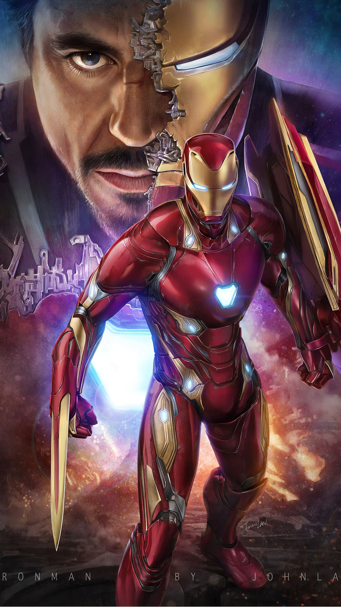

2008's Iron Man tells the story of Tony Stark, a billionaire industrialist and genius inventor who is kidnapped and forced to build a devastating weapon. Instead, using his intelligence and ingenuity, Tony builds a high-tech suit of armor and escapes captivity.
 ironman Ironman is here_Iron Man is a superhero appearing in American comic books published by Marvel Comics. The character was co-created by writer and editor Stan Lee, developed by scripter Larry Lieber, and designed by artists Don Heck and Jack Kirby. The character made his first appearance in Tales of Suspense #39 (cover dated March 1963), and received his own title in Iron Man #1 (May 1968). Also in 1963, the character founded the Avengers alongside Thor, Ant-Man, Wasp and the Hulk. A wealthy American business magnate, playboy, philanthropist, inventor and ingenious scientist, Anthony Edward Stark suffers a severe chest injury during a kidnapping. When his captors attempt to force him to build a weapon of mass destruction, he instead creates a mechanized suit of armor to save his life and escape captivity. Later, Stark develops his suit, adding weapons and other technological devices he designed through his company, Stark Industries. He uses the suit and successive versions to protect the world as Iron Man. Although at first concealing his true identity, Stark eventually publicly reveals himself to be Iron Man.